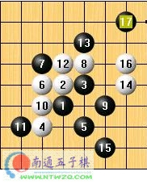

〖小手评棋①〗打有准备之仗
一个好的将军，不会打无准备之仗；同样，一个优秀的棋手，要对自己的行棋调度自如，不要把自己领进陌生的禁地。
这盘棋是中游五子棋擂台赛中新派连珠★悟石ξ执黑与我下的一盘棋。作为挑战者，悟石以D3疏星开局，给出了疏星一打二打，我毫不犹豫的选择了2打，并把6走在了3的右侧。我第一次见到这个白6是在一年之前与爱沙尼亚高手Tunnet于教室的一盘友谊交流，当时这个6极大的震惊了我，看起来非常单薄，但韧性十足。一年后，Tunnet在瑞典成为了新的世界冠军，这个时候白6才被普及开来。
悟石显然对这个白6并不熟悉，黑9纯防后被白10占据角点，如果9直接下在10的地方，还有大鹏展翅之感，合理的调度了空间，是强手。可是黑9这样一下，之后就只有挣扎了。黑13显的苍白无力，在疏星的局面中黑棋这么早就转入防守，十有八九是要挂的。黑19确切的告诉我们，黑棋在防守，而右下白棋的余味很强，黑棋不好招架。我想，这显然是与悟石的行棋初衷相违背的，没有人喜欢一开始就进行这样的防守，看来，他对这个白6的出现感到了惊异，在短暂的思考后也没有下出强手，这对于一个棋手来说是不成功的。
白20拉开了进攻的序幕，黑棋出现了太多的顾忌，都想防又不可能全防。黑21是强手，试图切断上下的联系。22利用斜线做棋是强手，这个时候白棋如猛虎下山，已经势不可挡。黑在这个时候掉线未归而败，意义不大，已经无解。
以下是黑棋强防手段，白棋继续利用斜线子力做棋，形成必胜型。
这篇棋评告诉我们，在真正的比赛对抗中，选手对开局与两打的选择，调度都极为关键，如果策略成功，把棋转入自己熟悉的局面，哪怕是骗着，往往会取得理想的结果；反之，如果迅速被对手领进一个自己未知的禁地，那么这一仗注定是无准备的，没有回头，只有在一片沼泽中艰难的前行了。
〖小手评棋②〗内部子力的连接
曾经有人问我五子棋和围棋有没有联系，我这样回答他：五子棋和围棋的棋子都是越下越多，局面变的愈加复杂；而象棋则是棋子越下越少，局面变的愈加简化。从这点上看，五子棋和围棋是相通的。但是有时候我们往往误会了“复杂”的概念，忽略了最为简单与基本的棋型。
这盘棋是中游五子棋擂台赛中我执白与雪花wh落的一局。瑞星13手是现在非常流行的下法。这个黑17是黑棋的败招，它最早于2003年末流行于日本连珠BBS，一度被认为是黑大优甚至必胜，但后来的研究表明，白棋可以不断的利用黑棋的禁手，进行追胜。
黑棋29必然。34之后，白棋巧妙了利用了黑棋的长连禁手是取胜的关键。38手后，黑棋顾忌下面白的反3或者反43（图3B点）而必须防守，白棋在最上面还可以抓到黑棋的44禁手（图3A点），可谓在平静中不小心的双杀了。看似平实，但却是非常的精彩！
这盘棋的关键在于图2中对A点的选择。我们往往更多是注意了空间上的防守概念，过分的追求了空间的感觉，却忽视了最基本的内部子力。这盘棋的经典还在于，白棋从一开始就利用44禁手进攻，一直到最后利用长连禁手，最后巧妙的在上面抓到44禁手，也许可以写入禁手理解的教科书。
我认为每个执着于五子棋的朋友在学棋中都经历了如下几个阶段：进攻――防守――牵制――做棋――攻守平衡。往往从牵制到做棋的过度是中级棋手的一道坎；而进入做棋阶段的棋手总会陷入一种误区：一味的追求占据空间或者过分飘逸的连接子力。这盘棋评告诉我们：最有效的攻防点往往不是那些外表华丽，但却夹杂着浮躁的B，C，D点（图2），而是那种简单平实，在内部对己方子力产生连接的A点（图2）。如果一个棋手能在防守时注意到内部子力的连接，从而摆脱做棋就是要飘逸的占领空间的误区，其实这只是你成为一个攻守平衡棋手的必由之路；在进一步的完善了做棋的思想后，迎接我们的不是正午灿烂的阳光，而是我们在经历了沉沉的黑夜之后，刚刚升起的那轮带着希望的红日。
〖小手评棋③〗圆规定理
这盘棋是我执白在中游擂台赛上对“啦啦啦哈哈。。”的一盘棋，对手连胜恶魔和悟石闯进第三关，实力可见一斑，这盘棋的结果是和棋。对于这盘棋，大家看的非常过瘾，但是就棋手本身而言，这却是一盘非常轻松的棋，虽然搏杀激烈，但是棋似乎在一种潜规则的*纵下平稳的运行着。而今天，我想通过这盘棋的局部思想来和大家讨论一下这种规则，我称它“圆规定理”。
正是对局双方都有了一种“圆规定理”在思维中的存在，使得这盘棋变的轻松而简单。
五子棋的棋盘上有4个角，而在高水平的棋手对局中几乎全部的子力争夺和输赢都来自于这4个角。于是，对角的争夺就显得极其的关键，如果一方占据了4个角，那这盘棋对于他来说是不可能输的，所以在你的对手试图占角的同时，你必须学会进一步的控制角，这样才能使自己一直处于一种安全状态。这盘棋评告诉我们，一个优秀的连珠棋手，必须时刻对棋盘上4个角保持一种危机意识，如果运用“圆规定理”使自己总是在角的争夺中处于优势状态，那么你将在无意中得到最强的防守，而明白了这一点并在以后的对局中加以利用，相信你一定会在今后连珠学习中有一个质的飞跃。〖小手评棋④〗马步与八卦
在前三次的棋理讲述中，我们学习了开局的策略，内部子力的连接与圆规定理的运用，这些抽象的概念表面上看难于理解，但却是连珠最基本的内涵。为了让大家进一步的领悟棋理，接下来的三讲我们来谈谈连珠的步伐。
马步一词源于欧洲（horse step），在中国也称这种棋型为桂字。4个首尾相连的马步，中国人称之为八卦。如图，1-3相当于一个马步，而1-3-5-7形成了一个八卦。无庸置疑，八卦是最强的防守棋型，但有的初学者摆八卦到了上瘾的程度，那么，如何破八卦就成为一个新的课题
这个时候如何破八卦就成了一个问题，我们也可以表达为如何破除4个马步的连接。在经历了18与19的继续做马步之后，白20先手破掉了黑的八卦，大家看，如果20这个点是黑棋，与13-5联系就会形成一个八卦。21虽然是继续摆卦，但明显应该是在防守白棋的进攻。22手抢先破除11-5-13的八卦是比赛的转折。
31手之后，很多朋友遇到这样的情况就会很匆忙，不知道去哪里下手。我当时根本没有思考就下了这个32手，因为我明白我要做的是破八卦。事后证明，这是非常强的一手，正是32的存在，打乱了黑棋原本严谨的防守体系，40手后，黑棋因长连禁手的存在而认输。
这盘棋的经典在于，对局双方深刻的理解并运用了马步与八卦的防守理念，而在这看似没有硝烟的战场上，白棋率先破黑棋马步的连接成功，吹响了进攻的号角并取得了胜利。这盘棋评告诉我们，马步与八卦都是有利的防守棋型，但是我们一味的追求做卦是不对的。在双方用马步僵持的时候，破卦应该成为棋手思维中的第一感觉，只要你破除了对方马步与马步之间的连接，那么胜利不再遥远。
〖小手评棋⑤〗双杀防
有朋友给小手评棋提出意见，说个别的棋理实在难懂。在这里我必须要说，我所讲的每一个棋理，针对的对象是不同的，有的针对初中级棋手，有的针对中高级棋手，但我相信，只要你认真把每一篇读完，就一定会有所收获。
36手之后，白棋在右翼形成攻势，黑棋需要进行一手干净的防守来瓦解白棋对右边的进攻。对于初中级棋手来说，这往往是一个难题，难在于一旦被对手反攻的时候就不知道如何进行有效的防守，这样一来，如果对手水平很高，几步做棋就可以致命。而在防守上慌张的主要原因，我认为是大家没有经过这方面的思考与总结，所以在这里我给大家介绍一种连珠的逆向思维。
所谓“双杀防”，就是利用连珠的逆向思维对对手进攻的双杀点进行判断，并率先的在防守中占据该点，从而得到最大的防守效率。这篇棋评告诉我们，连珠攻防点的选取互为逆运算，通过逆向思维，有效的进行双杀防，是一个棋手成熟与稳重的关键。在对连珠种种的进攻与防守深入计算的同时，强大的理论知识也必不可少，它将极大的提高我们攻防的效率，成为我们在今后对弈中的一项法宝。有的时候，连珠的道理就是如此的简单，一旦点破，我们的思维就会象鹰击长空，在一片更广阔的天地里自由的翱翔。
〖小手评棋⑥〗新版龟兔赛跑
小手评棋系列自从2004年5月底开篇以来，受到了广大连珠爱好者的喜爱，在各大论坛的转载及棋友推荐下，前五篇总浏览量已逾5万，大家的支持唤回了我久违的动力，让我有心继续这一棋理为主的棋评系列。
由于是sakata规则，我选择了花月开局，这是因为花月中三子之间的连接紧密，在对手给出四、五手后局面不至于变得异常复杂，对于与Ando在算力上存在巨大差距的我来说，五手后的局面越复杂就越不利，如果开局选择流星、名月这样的三子开阔的棋型，一般五手后局面就会变得复杂不清。Ando很快就下出了四、五手，想变回斜月的变化，这与上届比赛中他和顾炜的局面如出一辙。我交换成黑棋，Ando很快下出白6，于是变回了Rif规则下的斜月
定式一直延续到白12。黑13是我准备的变化，按照老定式13是下在图中的A点，但我深知Ando白14平三的深厚功力，所以正谱应对是下策。这个13我在去年8月曾经和Ando探讨，当时Luwenzhe也在，Ando一直没有给出一个白强防的答案，于是悻悻而归，但我深知这次短暂的拆棋给我和Ando都留下了深刻的印象。实证是我在日本BBS慢棋不断对高手尝试此黑13，已求白棋强防；而Ando干脆在去年9月的赫尔辛基公开赛上对芬兰冠军使出了黑13这一招，导致对方速败。所有的这些例子和变化涌上我的脑海，于是宝刀出鞘，也在情理之中。

这篇棋评告诉我们，在与实力超过自己的棋手比赛的时候，首先必须要有充足的准备，避免对手发挥自己的长处，还要发挥自己的优势，用连续的进攻打乱对手的阵脚，从开枰到收关主导比赛的进程，最后克敌制胜。而这一切，都来源于平时的积累。这篇看似简单的棋评还带给了我们连珠的几个名词：等招、过渡、刀五，如果你能真正的理解它们，哪怕只有一部分，相信它会给你以后的连珠对弈或比赛带来些许帮助。
每天来学一点，好东东～～～ 
［ 有志青年 于 2008-7-3 16:52:18 时奖励此帖[金币加 20 威望加1］